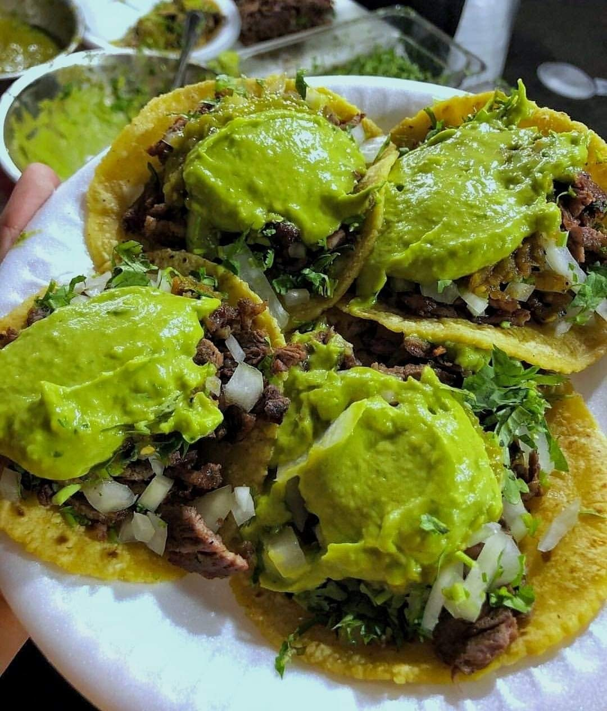

Home
Tacos de carne asada

Beloved staple in Central and Southern Mexico, particularly in states like Puebla, Oaxaca, and Guerrero.
Unlike the northern-style carne asada, which often features thin-cut grilled beef, the Central/Southern version
tends to use marinated, tender chunks of beef (like arrachera or diezmillo) cooked over charcoal for a smoky depth.
These tacos are typically served with fresh corn tortillas, vibrant salsas, and simple garnishes like onions,
cilantro, and lime.
Ingredients:
- 1.5 lbs (700g) beef (arrachera, diezmillo, or skirt steak), cut into thin strips or small chunks
- 1/2 cup orange juice (for tenderizing)
- 1/4 cup white vinegar or lime juice
- 3 cloves garlic, minced
- 1 tsp ground cumin
- 1 tsp dried oregano (preferably Mexican)
- 1 tsp smoked paprika or achiote paste (for color & depth)
- 1 tsp salt, plus more to taste
- 1/2 tsp black pepper
- 2 tbsp vegetable oil
For serving:
- Fresh corn tortillas
- Chopped white onion & cilantro
- Lime wedges
- Salsa verde or roja (blended with tomatillos or chiles de árbol)
- Guacamole or sliced avocado (optional but a must)
- Grilled scallions or nopales (common in Central/South Mexico)
Instructions:
- Marinate the meat: In a bowl, mix the orange juice, vinegar, garlic,
cumin, oregano, paprika, salt, and pepper. Add the beef, ensuring it’s well-coated.
Cover and refrigerate for at least 1 hour (or up to 4 hours for deeper flavor).
- Cook the meat: Heat oil in a skillet or grill over medium-high heat.
Remove the beef from the marinade (shake off excess) and cook in batches until charred and tender
(~3–5 minutes per side).
For authenticity, use a comal or charcoal grill for smokiness.
- Warm tortillas: Lightly char the tortillas on the grill or comal.
- Assemble tacos: Serve the carne asada on tortillas, topped with onion, cilantro,
a squeeze of lime, and your choice of salsa.
Enjoy!